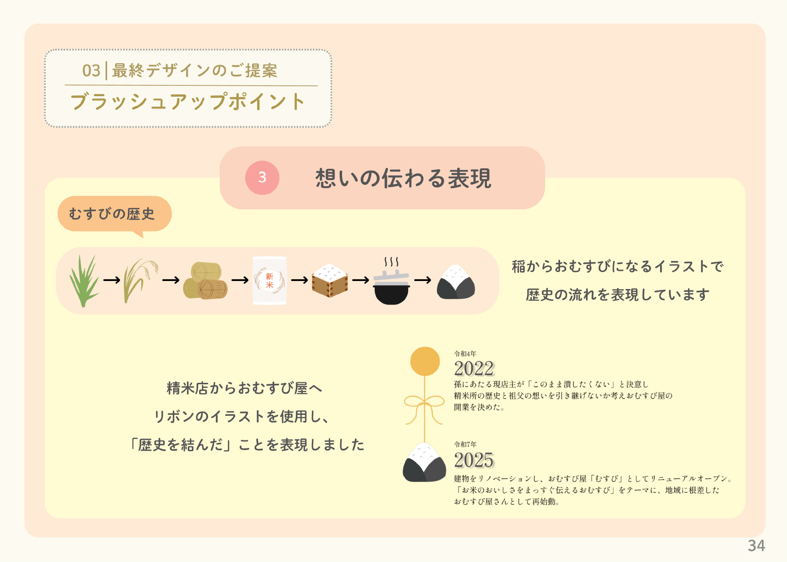
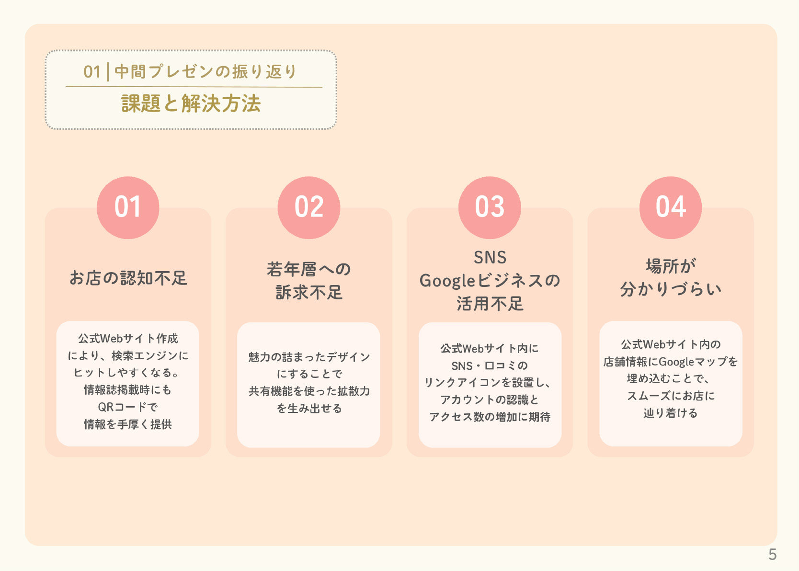
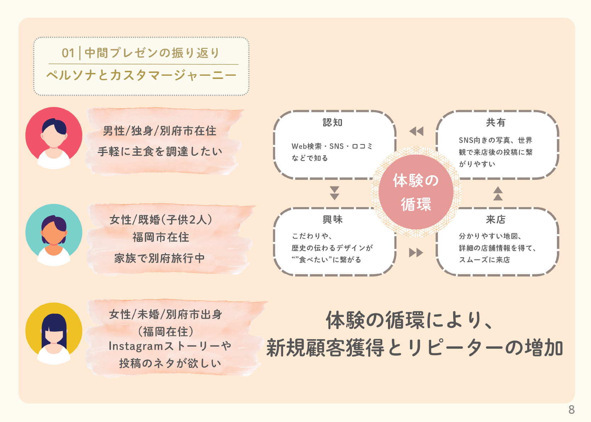

Group Work
おむすび屋 むすび
- 作品種別
- Webサイト / ディレクション・制作
- 制作時間
- 100時間
- ターゲット
- 20代〜30代の国内・地域のお客様（SNSを活用する若年層や旅行者など）
- 担当役割
- ディレクション / プレゼンテーション資料作成・トークスクリプト作成・プレゼンテーション / 下層ページ（こだわりページ）コーディング
- サイトコンセプト
- 「ひとと思いをおむすびでむすぶ」
- 配慮した点
- ・結論から逆算し、戦略とデザインを紐付けた納得感のあるプレゼン構成の追求
・前倒しのスケジュール策定と、有事の際の迅速なリソース再配置による納期遵守・品質管理の徹底 - 今後の課題
- 論理的戦略を土台としつつ、デザイナーの感性を最大化させ、視覚的なインパクトでも競合を圧倒できるディレクションスキルの向上。
Strategy & Direction
クライアントの「想い」を、新規顧客（20-30代）の「ファン化」に繋げるための戦略設計を担当しました。
01. 祖父の想いと歴史を継承するコンセプト

廃業後、お店の取り壊しの危機にあった祖父の精米所への想いと、祖父の口癖「本当に美味しい米は冷めても美味い！」を具現化したお米、「つやはるか」独自開発するほどのお米に対する想い。祖父から父、そして孫への歴史のリレーと、開業までに支えてくれた沢山の方との縁の結びを、若い世代にも伝わる世界観で構築しました。
02. 4つの課題に対する具体的な解決策

認知不足や若年層への訴求不足に対し、SEO/MEO対策、SNS連携、Googleマップの埋め込みによる来店導線の明確化を提案しました。
03. 認知から共有までの循環サイクル

SEO・MEOによる「入口作り」から、こだわりが伝わる「デザイン」、スムーズな「来店」、そしてSNSでの「共有」へ。新規顧客がファンとなり、次の認知を生む循環を設計しました。